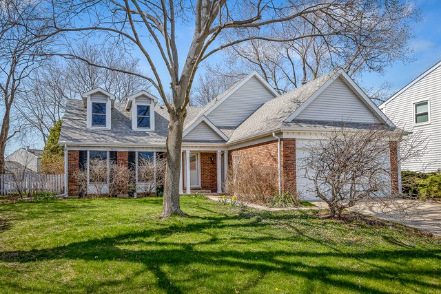
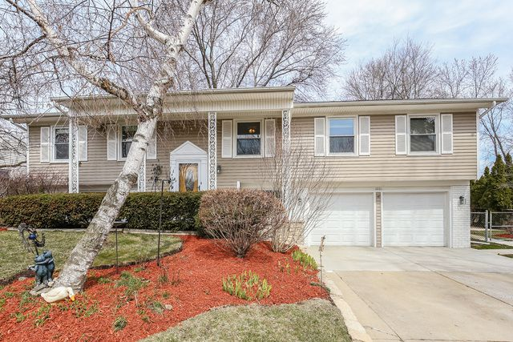
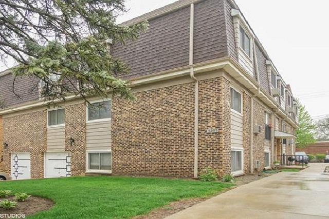
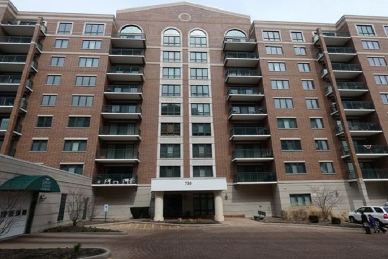
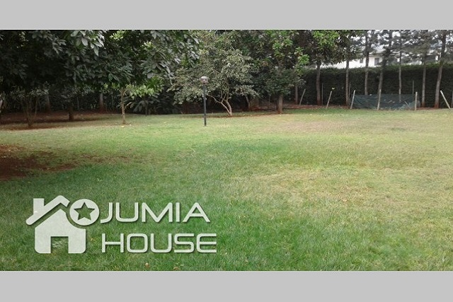

4 Beds & 3 Baths ($339,900)
Location: 714 N Walnut Ln, Schaumburg IL
Schaumburg just got rated as the Best Place to Live in Illinois by Money Magazine. I probably don't need to
continue but I will anyway.
This is a well-maintained and updated home in a premium part of Schaumburg. The home sits on a quiet street, in a
a low-traffic cul-de-sac, and there are seemingly endless parks, recreation, entertain, shopping, and dining
nearby. The home itself features: NEW windows (2015) ; NEW carpet and laminate flooring (2018) ; NEW HVAC (2012)
w/a high efficiency furnace ; UPDATED kitchen w/granite counters & SS appliances ; HARDWOOD floors ; Fenced yard ;
NEW paint ; Outdoor living w/a deck and brick paver patio ; so much more. The list just goes on...I could mention
the large wood-sash windows that flood
the main floor with light, or the 4 seasons room in the back, or all the new ceiling fans that were
installed...but I won't. Come see this gem before it's gone!

4 Beds & 3 Baths ($359,900)
Location: 1001 Belmar Ln, Buffalo Grove IL
Schaumburg just got rated as the Best Place to Live in Illinois by Money Magazine. I probably don't need to
continue but I will anyway.
This is a well-maintained and updated home in a premium part of Schaumburg. The home sits on a quiet street, in a
a low-traffic cul-de-sac, and there are seemingly endless parks, recreation, entertain, shopping, and dining
nearby. The home itself features: NEW windows (2015) ; NEW carpet and laminate flooring (2018) ; NEW HVAC (2012)
w/a high efficiency furnace ; UPDATED kitchen w/granite counters & SS appliances ; HARDWOOD floors ; Fenced yard ;
NEW paint ; Outdoor living w/a deck and brick paver patio ; so much more. The list just goes on...I could mention
the large wood-sash windows that flood
the main floor with light, or the 4 seasons room in the back, or all the new ceiling fans that were
installed...but I won't. Come see this gem before it's gone!
Apartments for Sale

2 Beds & 1 Baths ($139,900) 1,000 sq. ft
Location: 1363 Brown St APT 1C, Des Plaines IL
Schaumburg just got rated as the Best Place to Live in Illinois by Money Magazine. I probably don't need to
continue but I will anyway.
This is a well-maintained and updated home in a premium part of Schaumburg. The home sits on a quiet street, in a
a low-traffic cul-de-sac, and there are seemingly endless parks, recreation, entertain, shopping, and dining
nearby. The home itself features: NEW windows (2015) ; NEW carpet and laminate flooring (2018) ; NEW HVAC (2012)
w/a high efficiency furnace ; UPDATED kitchen w/granite counters & SS appliances ; HARDWOOD floors ; Fenced yard ;
NEW paint ; Outdoor living w/a deck and brick paver patio ; so much more. The list just goes on...I could mention
the large wood-sash windows that flood
the main floor with light, or the 4 seasons room in the back, or all the new ceiling fans that were
installed...but I won't. Come see this gem before it's gone!

3 Beds & 2 Baths ($339,900) 1,800 sq. ft
Location: 750 Pearson St APT 902, Des Plaines IL
rarely available penthouse unit with west exposure and 2 garage spaces. this is the creme de la creme. open
concept space that is bright and light with beautiful hardwood flooring and freshly painted t/o. spacious kitchen
with cherry stained maple cabinets and granite countertops and ss applicances with plenty of space for a breakfast
table. generous sized master bedroom with his and her closets each w custom elfa closet organizers. master
bathroom with whirlpool tub and separate shower. 9x6x11 storage unit in garage #25.
this location is incredible with walking distance to metra train station, restaurants and shopping. library courte
is where you want to be! garage spaces 25 and 15.
Business Plots For Sale
28 Acres Land ($63,050,000)
Location: 411-00517, Nairobi
A very attractive 28-acre serene plot with numerous outbuildings, near Lake Elementaita adjacent to Jacaranda
Hotel enjoying tantalizing views of the Lake, Eburru escarpment and Soysambu conversancy. Very ideal for a
luxurious hotel.
Ready for redevelopment as a hotel business or holiday homes
Lovely gardens with mature trees, all preserved over many decades
5 red brick colonial cottages built in the 1930’s by Galbraith Cole
16 x 6 metres swimming pool – almost 70% complete.
Other numerous outbuildings including staff accommodation
Great accessibility; only 700m off Nairobi Nakuru Highway and 120Km from Nairobi.
Borehole in place & 3 phase power connected
Fully fenced with a masonry wall and barbed wire.

2.2 Acres ($7,892,280)
Location: P.O BOX 1378-00621, Nairobi
This is a Prime 2.2 acres of Land for sale located in Kilimani near Yaya Centre. The part of the land is partly
excavated. The area is Prime for office Blocks and business centres.